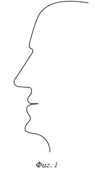
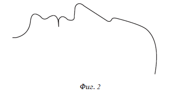
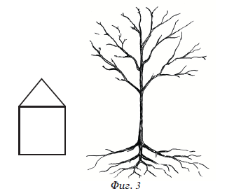

Беседа 1302 от 3877 · Беинса Дуно
Най-високото място / Най-високото място. Закон на икономията в природата
— Само светлият път на мъдростта води към истината.
— В истината е скрит животът.
Размишление.
Прочетете романите „Война и мир“ от Толстой и „Клетниците“ от Виктор Юго и направете сравнение между идеите, които са застъпени от двамата автори.
Запитали едно дете: – Защо Господ направил птиците с два крака? – За да ходят бързо. – Защо направил човека с две ръце? – За да работи. – Защо кучето има уста? – За да лае. Какво ще каже детето за човешката уста? Защо е устата на човека: да се храни с нея, или да говори?
Представете си, че сте написали числата от 1-9 в естествения им ред. Кое е най-голямо от тези числа? – Деветорката. – Защо? – Защото има девет единици. Обаче, ако напишем числата от 1-9 така, че да представят едно число, тогава единицата ще бъде най-голяма: 123,456,789. Ако имате една кошница пълна с ябълки, единицата ще бъде най-голяма. – Защо? – Защото, колкото ябълки да извадите от кошницата, те ще съставят част от цялото. Десет ябълки представят само част от всичките ябълки в кошницата като единица. Или, ако разделим една ябълка на десет равни части, всяка част е по-малка от цялата ябълка. Кое деление предпочитате: първото или второто? Ако сте десет души, при първото деление всеки ще получи по една ябълка, а при второто – по една десета част от ябълката. Какво ще направите със семките на ябълката, като я изядете? Ако сте разумен, ще ги посадите. Добре е, като ядете плодове, сладки и кисели, да броите по колко семки има във всеки плод, а след това да ги посадите, да видите, какви дървета ще израснат. Забелязано е, че сладките и вкусни плодове, например, дините, съдържат по-малко семки от безвкусните. Значи, сладостта на динята е отишла в семките. Колкото по-малко семки има една диня, толкова е по-сладка, защото сладостта остава в тъканта й. Този закон действа и в човешкия живот. Семейства, в които има много деца, са по-бедни от тези, които имат малко деца. При това, родители, които имат повече деца, са по-слаби от тези, които имат едно-две деца. Друг е въпросът, ако децата, които се раждат в едно семейство, са от висока култура. При това положение, макар, че са повече деца в семейството, те предават голяма енергия на родителите си. Когато децата са от низка култура, майките осиромашават и отслабват; когато децата са от висока култура, майките разбогатяват и се засилват. Същият закон има отношение и към човешките мисли и чувства. Когато мислите и чувствата на човека са от нисш характер, той губи силата си; когато са от висш характер,той придобива енергия и става способен за работа.
  
Храненето е един от важните икономически въпроси, за разрешаването на който ръководителите на човечеството са мислили дълго време. След разрешаването му, хората ще започнат истински да творят. Храненето е свързано с въпроса за обмяната на веществото. Без храна човек отслабва. Следователно, храната е необходима за всяко живо същество. Колко храна е нужна на слона? – Дневно по пет крини ориз. На лисицата? – Една кокошка. На гълъба? – 20 житни зърна. На мравката? – Едно житно зрънце. На човека? – Различно. Както различните хора употребяват различно количество физическа храна, така и в умствения свят, човек храни различно количество идеи: едни се нуждаят от повече храна, а други – от по-малко. Затова казваме, че едни идеи имат характера на слона – за тях употребяват дневно по пет крини ориз; други имат характера на лисицата, на гълъба, на пчелата, на мравката и т. н. Това, именно, създава различни противоречия в човешкия живот.
Когато хората се натъкват на противоречия, ще знаят, че причината е в техните идеи. Някой има идеи, големи като слона, но природата не му дава условия да ги реализира. Той се блъска натук-натам, мъчи се да ги постигне и се пита, защо не успява. Много просто. Природата знае, с какви средства разполага той и не му дава нужните условия. Може ли да изхрани той една идея, голяма като слона? – Не може. Вместо да задлъжнее и да обърка сметките си, природата му противодейства в реализиране на неговото желание. Един иска да бъде красив, друг – силен, трети – богат, четвърти – гениален. Това са велики идеи, като слона – за реализирането на които са нужни стотици килограми ориз. Как ще се изхранят те? Гениалните и талантливите хора се мъчили да създадат нещо велико, но малцина от тях са успели. – Защо? – Защото всички са стигнали до едно място и там са спрели – нито се качват нагоре, нито слизат надълбоко. Дойдете ли до идеите, стремете се да стигнете най-високото място, защото там водата е най-чиста. Идеите слизат от най-високото място в света. Кое е това място? – Дето Бог живее. На никое живо същество кракът не е стъпил на това високо място. В този смисъл, Бог не е нищо друго, освен най-високият идеал, към който човек се стреми. Ще кажете, че понятието Бог е отвлечено. Зависи, какво е съществото, което се стреми към високия идеал на живота. Ако е мравка, за нея понятието висок идеал, висок връх, е крайно отвлечено.
Като се говори за Бога, ще знаете, че Той е най-високото место, на което никое същество не е стъпило. Някои философи наричат Бога Абсолютно, Безгранично, Безконечно, Несъизмеримо начало. Христос казва: „Отивам при Отца си“. Въпреки това, и Той не е стигнал до най-високия връх. Когато детето отива при баща си, той му дава столче да седне до него, а сам сяда на висок стол. Клонът не може да стигне височината на дървото. Дървото съдържа нещо по-високо от клонете. Колкото и да се издигат във висините, клонете не могат да стигнат дървото, от което са произлезли. На това основание, казвам: Никой смъртен досега не е дал обяснение за Абсолютното, Безграничното, Безконечното начало. Безконечното подразбира непреривно движение, без начало и без край. Затова казваме, че докато конецът е здрав, хвърчилото всякога ще хвърчи. Изтъни ли се конецът, той непременно ще се скъса, и хвърчилото ще падне на земята. Това значи: всяко същество може да се движи, докато е свързано с конец, който се намира в постоянно движение. Обаче, конецът, който движи нещата, сам се управлява. Той не се нуждае от никого. С други думи казано: Абсолютното Начало се отличава с пълна свобода и независимост; никой не Го движи, никой не Го управлява. Идеите на Абсолютното се идентифицират с идеите на вечността. Затова казваме, че Бог е без начало и без край.
Основната идея на днешната лекция е, че природата има своя икономия. Човек слиза на земята и живее на нея според закона на икономията. Според този закон, всеки се ползва от благата на природата дотолкова, доколкото тя го кредитира. Някой се оплаква, че отива на онзи свят с отворени очи, че не е реализирал желанията си. Много естествено, природата не го е кредитирала. Тя му казва: Това, което желаеш, не е за тебе. Когато някой казва, че отива на онзи свят с отворени очи, това подразбира, че не е умрял, но се преструва на умрял. Кога човек остава касата си отворена? – Когато не е приключил сметките си. За да не отивате на онзи свят с отворени очи, ликвидирайте с дълговете си. Щом изплатите дълговете си, очите ви се затварят за този свят, и вие свободно го напущате. Кога още човек не затваря касата си? – Когато има някое непостижимо желание. Например, иска да има един голям скъпоценен камък. Защо му е този камък? Ако го придобие, с него ще си навлече големи нещастия и мъчнотии. Всеки ще прояви любопитство, да види, кой е този човек, който притежава такава скъпоценност. От друга страна, някои ще пожелаят да откраднат камъка; други пък ще задигнат и камъка, и човека. Като знае това, природата постъпва разумно. Тя никога няма да даде един скъпоценен камък на човек, който не може да го запази.
Всяка ценност има смисъл само тогава, когато от нея се ползва главно онзи, на когото е дадена. Природата влага велики идеи само в онази глава, която може да ги възрасти, отхрани и приложи. Не може ли да направи това, човек си остава със своето непостигнато желание дотогава, докато сам не заякне, не стане годен да го реализира и приложи. Желание, което не иде навреме, не може да се реализира. Когато иска да постигне известно желание, човек трябва да си даде отчет, има ли гръбнак да издържа на неговите изисквания. Ако желанието е голямо като слон, той трябва да се запита, има ли достатъчно храна да го поддържа. Какви желания и идеи искате да имате: като тези на слона, или като на лисицата, на гълъба, на пчелата, на човека? За предпочитане е да имате желания и идеи на човека – в тях има разумност. Другите желания не го ползват. Какви са. желанията на гълъба, например? – Да намери няколко зрънца, за да прекара деня. Щом сте хора, стремете се към желанията на подобните си, за да можете да растете и да се развивате правилно. При това, не се обезсърчавайте, ако не можете веднага да реализирате желанието си. То носи своето благо, независимо това, дали скоро, или късно ще го реализирате. Всяко реализирано желание се придружава с радост, а нереализираното – със скръб. Човек се движи между радости и скърби и така расте. Радостта подразбира придобивка, а скръбта – загуба. Животът се движи между полюси – радост н скръб.
Какво, всъщност, представя реалният живот? – Разумно оценяване на радостите и скърбите, или на печалбите, и загубите. Трябва да се ценят и най-малките работи. Казват за някого, че е лукова глава. С това искат да кажат, че няма стойност. Това е криво разбиране. И лукът има своята цена. Изучавайте свойствата му, и той ще ви помогне. Може да лекувате с него. Ако някой се оплаква от болка в крака или в ръката, наложете болното място с печен лук и малко масло. Лукът смекчава болката и отнема температурата. Болният ще ви благодари и възнагради. Значи, простият лук ще ви помогне да спечелите един приятел, а също така ще ви улесни и материално. Не пренебрегвайте малките неща, за да се ползвате от благата, които крият в себе си.
Като ученици, вие трябва да спазвате закона за икономията в природата. Каже ли ви тя, че това, което желаете, не е за вас, не настоявайте да го получите. В това отношение природата е строга. Тя не позволява на своите деца никакви излишни неща, никакви удоволствания. Тя дава на всекиго според дарбите и способностите му. Не се стремете към големи работи, за реализирането на които са нужни големи разходи. Те причиняват ненужни страдания. Дето има загуби, там има страдания; дето са печалбите, там са и радостите.
Какво е нужно на човека при сегашните условия? – Здраво тяло, добро сърце и светъл ум, който слугува на сърцето. Умът подтиква, подкрепва и забавлява сърцето. Както майката се справя със своенравното си дете чрез играчки, забави и сладки работи, така умът се справя със своенравното сърце. Той поддържа огъня на сърцето.
Защо е нужно човек да изучава закона на икономията? – За да не страда. Природата не обича разточителността. Самовъзпитанието има за цел да научи човека, кои от желанията си да реализира и как да ги реализира. Ако е богат, той може да реализира желания, подобни на тези, които слонът има; ако е беден, нека реализира само желания, подобни на желанията на гълъба. Благодари на гълъбчето, ако може да ти донася радостни вести. Гълъбът донесе на Ноя маслиново клонче, с което му съобщи радостната вест, че на земята има вече условия за живот.
— Само светлият път на мъдростта води към истината.
— В истината е скрит животът .
11. Лекция от Учителя, държана на 2 ноември, 1928 г. София – Изгрев.